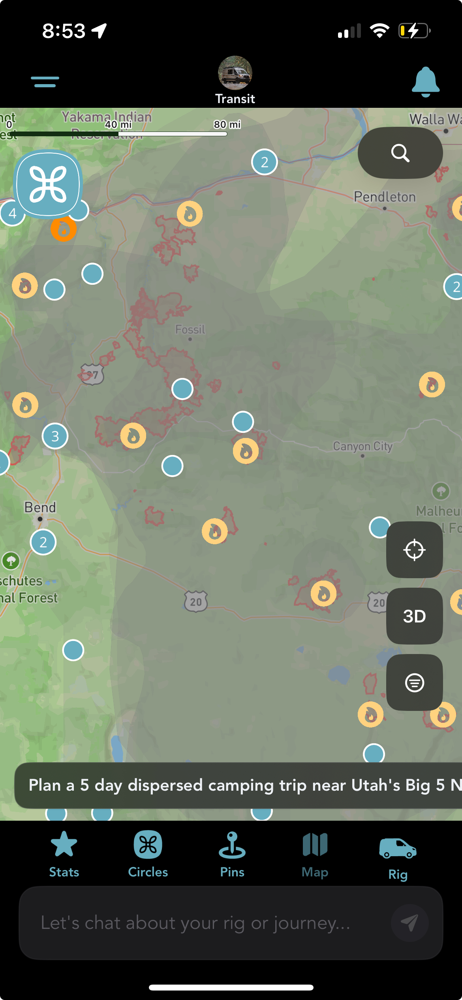

Real fire hotspots and perimeters, as they actually appear on the map right now.
Wildfire season affects real communities, real property, and real people's plans, not just ours. We're not writing this to make a feature announcement feel exciting. We're writing it because vanlifers and RVers make routing decisions every day with less information than people in one place for the season, and one more layer of awareness can help.
Grover's map can now show three things: where active fire is being detected right now, where a fire's mapped boundary currently sits, and where smoke is affecting the air. All three are optional map layers you can turn on or off, and they're meant to inform a decision, not make one for you.
This is a planning aid, not an emergency alert. If you're near an active fire or a smoke event right now, check official sources first: your local emergency management office, InciWeb, or your state DOT's 511 road closure line. Grover's layers are for deciding where to head next, not for finding out whether to evacuate.
Fire Hotspots
This layer plots individual fire detections from NASA FIRMS, pulled from three VIIRS satellite sources (NOAA-20, NOAA-21, and Suomi NPP) across the continental US. It's on by default when you open the Layers drawer. Tap any flame icon and you'll get a detail sheet with the detection time, satellite, day or night reading, confidence level (Low, Nominal, or High), and radiative power and brightness readings where available.
Zoomed out, nearby detections cluster into a single icon; tap a cluster and the map zooms in to break it apart instead of just popping a number. The sheet itself is upfront about what this data is: near-real-time satellite detections that are preliminary and can include false positives, like flares or agricultural burns.
Fire Perimeters
This layer shows the current mapped boundary of active fires, sourced from NIFC/WFIGS. It's off by default, you turn it on from the same drawer. Tap a shaded perimeter and you'll see the incident name, its category, size in acres, and when it was last reported.
Perimeters are drawn by fire management teams and don't move as fast as a fire itself can. The detail sheet says as much: fire perimeters are preliminary and subject to revision, and you should always verify with official NIFC/WFIGS sources before your trip.
Smoke
This layer shows smoke density from NOAA's Hazard Mapping System, drawn as a soft haze rather than a hard boundary, because that's genuinely what it is: an analyst-drawn estimate of light, medium, or heavy smoke coverage, not a discrete edge. It's off by default. If you're deciding whether to route somewhere with poor air quality, or whether it's worth adjusting a stop, this is meant to be one input into that call.
Where the Data Comes From, and Its Real Limits
All three layers pull from public federal sources: NASA FIRMS for hotspots, NIFC/WFIGS for perimeters, and NOAA HMS for smoke. We're not running our own fire detection, we're surfacing what these agencies already publish, in the app instead of a separate browser tab.
Refresh isn't instant. Fire perimeters update four times a day, and hotspots and smoke both update twice a day. That's frequent enough to be useful for trip planning, but it's not a live feed, and it's not a substitute for checking conditions right before you drive into an area. We'd rather tell you that plainly than let you assume more freshness than these sources actually provide.
What This Isn't
This is not an emergency alerting system, and it doesn't replace evacuation orders, local authorities, or official alerts. Think of it the way you'd think of checking a weather radar before a long drive: useful context for a decision you're already making, not a guarantee of what's ahead. If a fire or smoke event is actually unfolding near you, official channels will always be faster and more authoritative than any app, including ours.
On availability: these layers are live now on iOS. Android support is close behind and we'll share it here once it's out.
Don't have this yet? Make sure automatic updates are turned on in the App Store so Grover updates itself the moment new features ship, no need to check back and update manually.
Plan Your Next Route With More Information
Download Grover and turn on the fire and smoke layers from the map's Layers drawer.